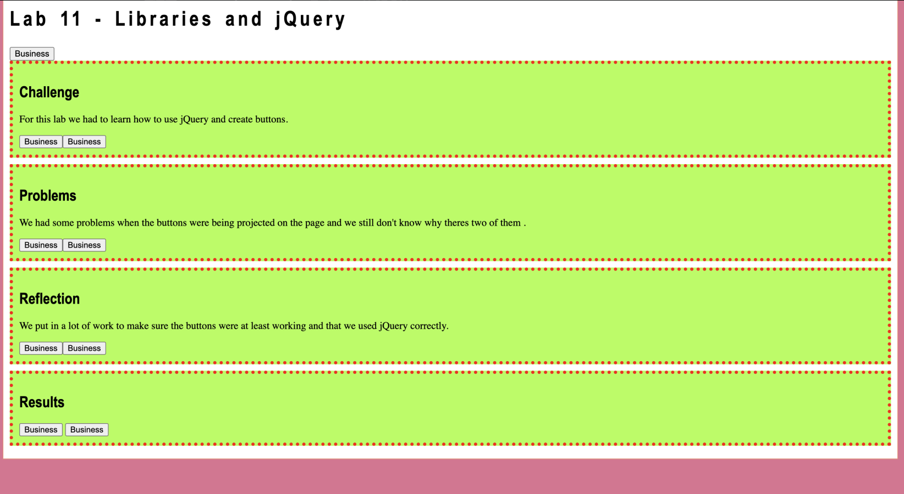

Lab 14: Debugging Tools & Strategies
Challenge
Debugging old labs and finding solutions to previous issues that came up.
Problems
We struggled at first with figuring out how to add the party feature to our lab 11. But after researching a bit and looking at the professor's code we were able to add it.
Reflection
Overall, this was a good experience because it forced us to really look at our code and examine every small detail to figure out what went wrong. This makes us stronger programmers because it helps with attention to detail. And we learned from our mistakes!
